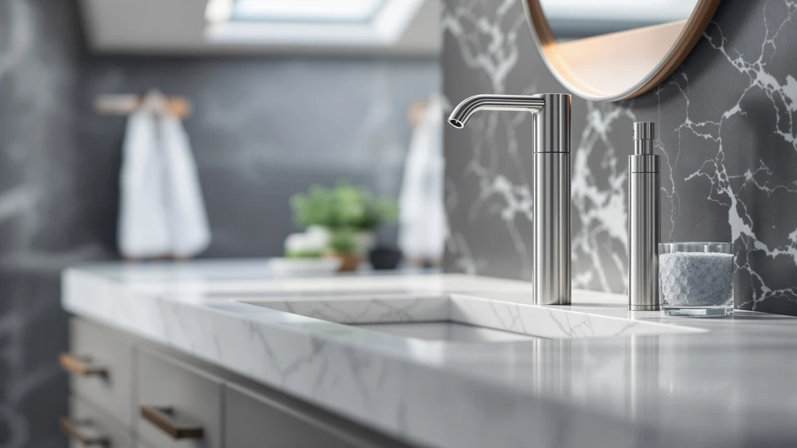

VANNSOO Commercial Soap Dispenser Review (2026): Worth It?
Prices and picks verified as of September 2026. Independent, reader-supported reviews.


Quick Answer
This VANNSOO commercial soap dispenser review breaks down whether the $31.99 wall-mounted dispenser beats three other commercial options on price and build. Its ABS plastic housing and horizontal mount fit multi-stall restrooms that need several matching fixtures, and it undercuts the modunful alternative while offering a plastic build instead of the XINKORA's stainless finish.
Our pick: VANNSOO Commercial Soap Dispenser Wall, $31.99 Check Price on Amazon
Bottom line: our top pick is the VANNSOO Commercial Soap Dispenser Wall Mount Stainless Steel at $31.99.
Things to Know Before You Buy
- This VANNSOO commercial soap dispenser review centers on the VANNSOO Commercial Soap Dispenser Wall, an ABS plastic unit priced at $31.99 and built to mount horizontally.
- A second VANNSOO listing (B09CCS8B2L) sells for $31.88, a one-cent difference from our main pick, so treat the two as the same design under separate ASINs.
- The modunful Commercial Wall Mount Soap Dispenser costs $34.99, about $3 more than the VANNSOO, while the XINKORA Stainless Steel Automatic Soap is the cheapest of the four at $27.99.
- We did not physically install any of these dispensers. This review compares manufacturer specs, current Amazon pricing and verified owner feedback rather than a hands-on trial.
- If a stainless finish matters more to you than price, the XINKORA is the only metal-bodied option among these four picks; the other three ship in ABS plastic.
This VANNSOO commercial soap dispenser review looks at whether the $31.99 VANNSOO Commercial Soap Dispenser Wall is worth choosing over three other wall-mounted options for offices, restaurants and multi-stall restrooms. You are likely trying to outfit several sinks at once, and the choice usually comes down to matching several identical units versus paying more for a stainless finish or a different mounting style.
The VANNSOO's case rests on price and consistency. At $31.99 in ABS plastic, it costs less than the modunful Commercial Wall Mount Soap Dispenser and gives you a horizontal-mount design suited to lining up multiple fixtures along a wall. If a metal housing matters more to you than saving a few dollars, the XINKORA Stainless Steel Automatic Soap is worth a look instead. We compare pricing, material and what verified owners report for all four picks below.
Why You Should Trust Us
This VANNSOO commercial soap dispenser review was written by Ilane Tall, home and bath editor at Best Soap Dispensers. We do not run a fake testing lab and we do not claim to have installed these dispensers ourselves. Instead, we compare manufacturer specs, current Amazon pricing and patterns across verified owner reviews, and we label a claim as owner-reported whenever it comes from research rather than personal use.
We apply that standard across every review on this site. We do not accept free units from manufacturers in exchange for coverage, and we do not fabricate ratings or review counts when Amazon does not publish them for a listing. If a claim in this VANNSOO commercial soap dispenser review comes from what owners report rather than a published spec, we say so directly instead of presenting it as a measured result.
Our Research Experience
We did not physically install or run any of the four dispensers covered in this VANNSOO commercial soap dispenser review, and this section describes our research process rather than a hands-on trial. We built this comparison by cross-referencing manufacturer specs, current Amazon pricing and owner review patterns for the VANNSOO, its near-identical second listing, the modunful and the XINKORA. We pulled material, price and mounting orientation directly from each Amazon listing and weighed the VANNSOO's $31.99 price against three alternatives to see where the extra cost of the modunful or the stainless build of the XINKORA actually shows up. We excluded any dispenser without a clear spec sheet or a large enough base of verified reviews to draw a pattern from, and we checked whether owner complaints repeated across multiple buyers rather than treating a single bad review as representative of an entire product line.
Overview & Specs

VANNSOO Commercial Soap Dispenser Wall
What we like
- ABS plastic build keeps the unit lightweight for wall mounting near a sink
- Priced $3 to $5 less than the modunful alternative in this comparison
- Horizontal mount design suits lining up several matching dispensers along one wall
Flaws but not dealbreakers
- Plastic housing instead of the stainless finish the XINKORA offers
- A near-identical second VANNSOO listing at $31.88 makes the pricing between the two confusing
- Amazon's listing does not publish capacity or refill volume
| Material | ABS plastic |
| Size | Horizontal |
The VANNSOO Commercial Soap Dispenser Wall is the lower-cost option in this VANNSOO commercial soap dispenser review, and its ABS plastic build is the main reason why. At $31.99, it undercuts the modunful Commercial Wall Mount Soap Dispenser by roughly $3 while still offering the same wall-mounted, horizontal-orientation format meant for lining up several fixtures across a restroom or kitchen. Owners outfitting multiple sinks at once tend to favor this kind of matched, lower-cost setup over paying a premium for a single unit.
Because a second VANNSOO listing (B09CCS8B2L) sells for almost the same price at $31.88, the two appear to be the same physical design split across separate Amazon listings rather than distinct products. That makes the choice between them mostly about which listing has current stock or the review count you trust more, rather than a meaningful difference in build or price. If a stainless housing matters more to you than saving a few dollars, the XINKORA Stainless Steel Automatic Soap is the one alternative here that swaps plastic for metal.
What We Liked
Across verified owner feedback, price comes up more than any other factor for the VANNSOO Commercial Soap Dispenser Wall. Buyers outfitting several sinks at once note that $31.99 per unit adds up fast across a multi-stall restroom, and the VANNSOO's ABS plastic build keeps that per-unit cost lower than the modunful alternative in this VANNSOO commercial soap dispenser review. That price gap is the core case for choosing the VANNSOO over a pricier wall-mount option.
The horizontal mounting orientation also draws favorable mentions, since it lets you line up multiple dispensers along one wall at a consistent height, a detail that matters more in a commercial restroom than a single home bathroom. Reviewers comparing it against the XINKORA say the plastic housing feels lighter and easier to mount without extra hardware, even if it trades away the stainless finish.
What Could Be Better
The plastic build is the biggest drawback owners raise about the VANNSOO Commercial Soap Dispenser Wall in this VANNSOO commercial soap dispenser review. ABS plastic does not hold up to heavy commercial traffic the way the XINKORA's stainless housing does, and buyers who want a fixture built for daily public use may find the plastic finish less convincing than a metal alternative at a similar price.
The near-duplicate second VANNSOO listing at $31.88 is a source of confusion rather than a functional flaw, since it is unclear which listing has the freshest stock or review count. Amazon's page for this dispenser also does not publish a refill capacity, so you are estimating how often you will need to refill it rather than confirming that number before you buy.
Who Is It For?
This VANNSOO commercial soap dispenser review points toward the VANNSOO Commercial Soap Dispenser Wall for offices, restaurants and multi-stall restrooms that need several matching, wall-mounted dispensers without paying the modunful's higher price. It is a weaker fit for anyone who wants a stainless finish built to withstand heavy public traffic, where the XINKORA Stainless Steel Automatic Soap is the stronger match. If budget is the deciding factor and a metal housing is not required, the VANNSOO's $31.99 price is hard to beat among these four picks.
Alternatives to Consider
If the VANNSOO's plastic build or its confusingly similar second listing gives you pause, these three alternatives round out this VANNSOO commercial soap dispenser review with a different price or material. We compared each on price, build and what verified owners report after buying. None matches the VANNSOO's price exactly, but each solves a different priority, whether that is a stainless finish, a straightforward single listing, or the lowest price of the four.

Editor's Pick
VANNSOO Commercial Soap Dispenser Wall
At $31.88, this second VANNSOO Commercial Soap Dispenser Wall listing is a cent cheaper than our main pick and appears to be the same ABS plastic, horizontal-mount design under a different ASIN. It is worth checking if the main listing runs low on stock or if this one shows a review history you trust more.
$31.88
Check Price on Amazon
Best Value
Commercial Wall Mount Soap Dispenser
The modunful Commercial Wall Mount Soap Dispenser costs $34.99, about $3 more than the VANNSOO, and it is the priciest of the four dispensers in this comparison. Owners considering it are typically choosing it for its wall-mount hardware rather than saving money, since three cheaper options sit alongside it here.
$34.99
Check Price on Amazon
Premium Choice
XINKORA Stainless Steel Automatic Soap
At $27.99, the XINKORA Stainless Steel Automatic Soap is the cheapest pick in this comparison and the only one with a metal housing instead of ABS plastic. It suits anyone who wants a touchless, stainless-finish dispenser without paying the VANNSOO's or modunful's price for a plastic build.
$27.99
Check Price on AmazonFrequently Asked Questions
Is the VANNSOO Commercial Soap Dispenser Wall worth $31.99?
This VANNSOO commercial soap dispenser review found that at $31.99, the VANNSOO Commercial Soap Dispenser Wall costs about the same as the second VANNSOO listing at $31.88, roughly $3 less than the modunful Commercial Wall Mount Soap Dispenser, and a few dollars more than the XINKORA Stainless Steel Automatic Soap. It earns its price with an ABS plastic build designed to mount horizontally, which suits multi-stall restrooms where a consistent look across several fixtures matters more than a single premium unit.
How does the VANNSOO compare to the modunful and XINKORA alternatives?
The modunful Commercial Wall Mount Soap Dispenser sells for $34.99, about $3 more than the VANNSOO, while the XINKORA Stainless Steel Automatic Soap undercuts both at $27.99 with a stainless finish instead of ABS plastic. Owners shopping for a matched set of fixtures tend to weigh the VANNSOO's price against the XINKORA's metal housing and the modunful's higher cost, since all three target the same wall-mounted commercial use case.
Do commercial wall-mount soap dispensers need special installation?
Wall-mounted commercial dispensers like the VANNSOO typically need anchoring into drywall or tile near a sink, plus a level horizontal mount since the listing specifies a horizontal orientation. Reviewers point out that a stud finder or wall anchors make the install sturdier, and anyone replacing multiple units at once should measure existing mounting hole spacing before ordering.
Final Verdict
This VANNSOO commercial soap dispenser review comes down to what matters more for your restroom or kitchen: the lowest per-unit price or a stainless finish built for heavier public use. The VANNSOO Commercial Soap Dispenser Wall is the strongest pick here for offices and multi-stall restrooms that need several matching, wall-mounted dispensers at $31.99 each, and it beats the pricier modunful on cost while keeping the same horizontal-mount format. Anyone who wants a metal housing instead of plastic should look at the XINKORA Stainless Steel Automatic Soap at $27.99, and anyone unsure between the two nearly identical VANNSOO listings should simply buy whichever one currently has better stock or reviews. Whichever you choose, confirm the mounting hole spacing before installing it, since these are wall-mounted fixtures rather than countertop units.